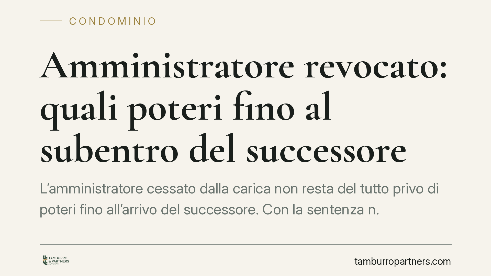

Amministratore revocato: quali poteri fino al subentro del successore
L'amministratore cessato dalla carica non resta del tutto privo di poteri fino all'arrivo del successore. Con la sentenza n. 10419/2025 la Cassazione ha stabilito che, in regime di prorogatio, può conferire mandato per un ricorso in Cassazione: è atto urgente, volto a evitare il giudicato di una pronuncia sfavorevole al condominio. Una precisazione che incide sulla continuità della gestione.

Il caso deciso dalla Cassazione
La vicenda è frequente nella vita condominiale: l'amministratore cessa dall'incarico — per revoca, dimissioni o scadenza del mandato — ma l'assemblea non ha ancora nominato il successore. In questa fase intermedia quali atti può ancora compiere?
La Corte di Cassazione, con la sentenza n. 10419/2025, ha affrontato il punto in relazione a un atto delicato: il conferimento del mandato a un difensore per proporre ricorso in Cassazione contro una sentenza sfavorevole al condominio. I giudici hanno ritenuto l'atto legittimo, perché rientrante tra quelli urgenti che l'amministratore uscente può adottare per tutelare l'interesse comune.
Inquadramento normativo
Il riferimento è alla cosiddetta *prorogatio imperii*, prevista dall'art. 1129, comma 8, cod. civ.: l'amministratore cessato è tenuto a eseguire le attività urgenti al fine di evitare pregiudizi agli interessi comuni, senza diritto a ulteriori compensi. Si tratta di un dovere, non di una mera facoltà, e opera fino all'effettivo insediamento del nuovo amministratore.
Con *prorogatio* si intende la permanenza dei poteri gestori in capo a chi ha cessato la carica, ma entro un perimetro ristretto: solo gli atti necessari a non lasciare il condominio privo di tutela.
A fare da cornice intervengono l'art. 1130 cod. civ., che elenca le attribuzioni dell'amministratore (tra cui l'esecuzione delle deliberazioni e la conservazione delle parti comuni), e l'art. 1131 cod. civ., che gli riconosce la rappresentanza processuale del condominio. È proprio su quest'ultima disposizione che si innesta la pronuncia: la rappresentanza in giudizio sopravvive, in forma ridotta, anche nella fase di prorogatio, quando l'atto difensivo non può attendere.
Il criterio dirimente è l'urgenza. Impedire il passaggio in giudicato di una sentenza sfavorevole — cioè evitare che diventi definitiva e non più impugnabile — è stato considerato dalla Corte un atto conservativo tipico, non rinviabile ai tempi, spesso incerti, di una nuova nomina assembleare.
Implicazioni pratiche
Per il condominio la sentenza offre una garanzia di continuità: la scadenza o la revoca dell'amministratore non espone l'ente a perdere termini processuali decisivi. Il difensore incaricato in questa fase non vede travolto il proprio mandato dalla cessazione della carica, purché l'atto risponda a un'esigenza di tutela immediata.
Per i condòmini, il messaggio è duplice. Da un lato, non si resta scoperti nei momenti di vuoto gestorio. Dall'altro, i poteri dell'amministratore uscente restano circoscritti: non può avviare attività ordinarie, assumere nuove obbligazioni o compiere scelte discrezionali che spettano all'assemblea o al nuovo amministratore.
Resta centrale distinguere tra atto urgente e atto ordinario. Pagare le utenze in scadenza, difendere il condominio da un pignoramento, impedire un giudicato: sì. Stipulare un nuovo appalto, deliberare lavori non necessari, modificare rapporti contrattuali: no. La linea di confine è l'irreparabilità del pregiudizio.
Un ulteriore profilo riguarda la responsabilità. L'amministratore in prorogatio che ometta un atto urgente — lasciando, ad esempio, decorrere un termine di impugnazione — può risponderne verso il condominio. Il potere, in questa fase, è anche un dovere.
Cosa fare in concreto
- Verificate lo stato della nomina: accertate se il nuovo amministratore è stato effettivamente insediato, perché solo da quel momento cessano i poteri del precedente.
- Distinguete urgente da ordinario: prima di autorizzare o contestare un atto dell'amministratore uscente, valutate se il mancato compimento produrrebbe un danno irreparabile.
- Monitorate i termini processuali: in presenza di cause pendenti, segnalate le scadenze di impugnazione per evitare il formarsi di un giudicato sfavorevole.
- Convocate l'assemblea con tempestività: ridurre la fase di prorogatio limita le incertezze e restituisce pienezza decisionale all'ente.
- Documentate le decisioni: conservate verbali, mandati e corrispondenza relativi agli atti compiuti nella fase di transizione.
Disclaimer
Contributo informativo a cura di Tamburro & Partners - Avv. Giuseppe Tamburro. Non costituisce parere legale.
Ogni condominio ha una storia a sé.
Se gestisci un'amministrazione e vuoi un confronto su una specifica questione condominiale, scrivi allo studio. Ti rispondiamo entro un giorno lavorativo.